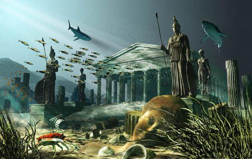

夜探大西国
大西国是哪里呢？大西国就是传说中沉于大西洋底的神秘的而高度文明的古国－亚特兰提斯城。
这个是一个神秘消失的国家，一夜之间就从陆地沉入了大西洋底，那么这个传说是不是真的呢，一向以为人民服务为口号滴妍记者决定去看看满足一下的自己和大家的那颗红灿灿的好奇心。出发，go
go go~
来到大西洋中，其实真的好害怕呀，越往下越黑暗，整个周围都是没有一点光的，什么也看不见，就在我害怕的时候，黑暗的地方突然被照亮了，哇哦~~~是灰常讲义气的护法锅锅照亮的。当火光覆盖这个区域时，整个古城都呈现在了眼前，而且神奇的是，呈现在我眼前的古城居然不是饱经沧桑的样子，而是如在陆地上的样子，干净又豪华，我慢慢下降，站在了他们的马路上，他们的马路不是水泥柏油铺的而是一种类似于水晶的材料而铺设的，我站的地方是在一座神庙的前面，这是一个带有巨大喷泉的大广场，喷泉四周被鲜花包围，真是很宏伟很漂亮。
我朝着神殿，我战战兢兢的走进去(说实话，人生地不熟的，真是怕呀~~），这个殿内有自动感应的灯，我走过的地方，灯都会亮起来，神殿中间有一张很大的位子，位子的后方是他们的神像，“你好，请问我能帮助你吗？”“谁？是谁在和我说话？”我高度紧张的瞧了瞧四周，根本没有人，“我在这里，你朝左前方看。”我顺着神秘声音的方向看去，呀，是一个透明的球那样的东东，“是你在和我说话？”我惊讶的问道，“对呀，我是这里的向导，你要去哪里，告诉我，我可以帮助你。”“啊，不用了，我自己参观一下就可以了，谢谢。”
我朝殿中的大宝座慢慢走去，突然宝座上出现了一个“人”，其实我知道他应该是长期守在这里的不肯离开的缚地鬼魂。
“这么多年过去了，终于又有人走进这座大殿了，我叫诺那，我是本国的大祭司，你是谁？看上去你和我们长得很不一样啊。”祭司用心念问道。
“我叫吕德妍，来自中国，今天来这里是想知道关于亚特兰提斯的传说是否为真，没有其他的想法，我刚刚在外面看到很多鬼兵在附近不让人靠近，请问这是怎么回事呢？”我也用心念回答他，其实心念的交流实在很方便，无论是什么国家的语言，都会变成各自所熟悉的语言，比有个翻译方便多了，也省得学习那么多国家的语言了。
祭司：“那些都是我们国家的勇士们，他们千百年来都守在此地，这是他们的使命。”
妍记者：“祭司先生，我能采访采访你吗？”
祭司很高傲的用心念回复我：“你不该叫我先生，而是要叫我祭司大人，你想要问什么，你赶快问，问完你请离开吧。”
妍记者：“好的，祭司大人，你们国家的人平时都要工作吗？有婚嫁吗？你们信奉真的是海神波塞冬吗？还有还有，有人说看到了人身鱼尾的人鱼，那些是你们国家的幸存者进化的吗？还有还有还有，你们国家的人交流是不是都是用心念来交流不用语言的？”
祭司：“我们的国家非常富足，你所说的工作，在我们的国家里不是最重要的，在我们的国家中，有专门的人负责研究食物，基本不需要种植，经过特殊的基因提取和结合，便会有大丰收，所以我们不会缺乏食物。婚嫁在我们的国家是自由的，人们可以随意结合也可以选择只是相爱，养育下一代也是可以自由选择，因为我们有非常先进的基因技术，子女的繁育都不需要在母体中，在专业的场所便可以完成，而需要的只是一点点细胞而已。当然，你也可以选择自然孕育，但是这是不会有人做选择的。海神波塞冬是我们的创造神，我们信奉他会庇佑我们，我们国家中所有的一切都是由他赐予的。你刚刚说着大海中的人鱼，其实他们是这大海中的精灵，他们有特殊的迷人心智的能力，所以见到的人一定要小心。在我们的国家之中，人人都有心念交流的能力，这些都不足为奇，我们天生便具有这样的能力，因为我们是海神的后人。
妍记者：“哇，原来你们在一万多年前就已经这么高科技了啊，不过你们为什么会一夜之间毁灭呢？这可是个迷呀。”
祭司突然脸色大变，整个脸扭曲了起来，放声痛哭：“这是诸神对我们的惩罚，当时我们用了无数的方法，祈祷，祭祀等，都没有使这场灾难消失
，那一天来临之前晚，海神突然来宣告：“你们已经脱离；了轨道，你们一直以来都不听诸神对你们的劝告，继续放纵奢靡，甚至有违人类的伦理道德，肆意杀害，挑起战争，现在已经是最后的期限，明日是惩罚的日子，你们将得到你们应有的审判。”当时我禀报了国王，国王也大惊失色，我们用了所有的方法，希望能熄灭诸神的怒火，但是这些在惩罚面前都是没有作用的，那天原本已经熄灭不再喷发的火山，突然喷出大火，天空大地很快被火山灰给覆盖，但这不是结束，在我们还抱着一丝希望的时候，大地开始震动，地上开始出现裂缝，人们四处逃散，向高处跑去，以为这样便能够逃脱，但是这也不是结束，当我们中的一部分人逃上高处时，看到远处大海中有巨大的浪向我们打过来，这个浪比我们的最高处还要高，在这一刻我们知道，我们完了，真的完了，当大浪夹杂着地震和火山的时候我们个沉入了海底，于是我们真的接受到了诸神的审判从此消失在大海的底部。
妍记者：“真的好可怕，你们违反人伦是指什么呢？难道就是你们的那些基因技术吗？
祭司似乎不愿多讲，想了很久，他说：“是的，我们的技术已经达到了很成熟的阶段，我们可以无限制的复制自己，即使我现在杀了你，也可以用你身上的细胞来复制一个你，所以在我们的国家没有杀人这条罪，因为，这不是什么难解决的事。”
妍记者：“天啊，你们这样的技术和我们现在的克隆技术太像了，我们现在的世界，就有科学家在研究这个，那一旦成熟后，以后这个世界岂不是大乱，我们会不会也像你们一样，最后面临消失。。。。”
祭司叹了口气，又说道：“在我们的国家，由于科技的发展，人们原本具有的淳朴的品质被淫乱，物质，冷血所代替，当人与人以外的动物发生关系作为一件平常事的时候，人类就已经被邪恶控制了。由于野心的膨胀，人们不再满足于在这有限的领土中生活，开始想控制别的国家，于是发动了大小的战争，由于我们的先进的科技，我们胜利是理所当然的，我们灌输我们所有的思想给到那些失败的国家，让他们抛弃传统的理念，并发展我们的先进的基因技术等等这些可能也是接受惩罚的一个方面吧。”
妍记者：“真是太可怕了，你知道你们所做的那些，都已经违反了因果了吗？你们这么做，天地之间的平衡都已经被打破，果报实在是太大了，恕我直言，你们受到这样的惩罚就是你们国家的共业所致，现在我们的文明也在走与你们类似的轨迹，真不知道将来会怎样，真是太可怕了。”
和祭司谈了这么久，其实我也大致知道了他们沉灭于海底的原因了，杀，淫，滥用科技，违反天地间的平衡法则，是天地之间的正气被恶业所笼罩，那么一旦果报成熟，谁也逃不过，到那时谁来管你是高文明还是低文明，是高科技还是低科技呢。
我离开时，又回望了一下这个消失的国家，这一次不再是干净又豪华，而是一个被海中生物占据，残垣断壁充满岁月痕迹的饱经沧桑的真正的古城。周围依然有执着的鬼兵把守着，时不时的也会有人鱼精灵在周围游过，又阴森又寂静。
注：以上对话内容全属虚构
加载中，请稍候......
 加载中…
加载中…